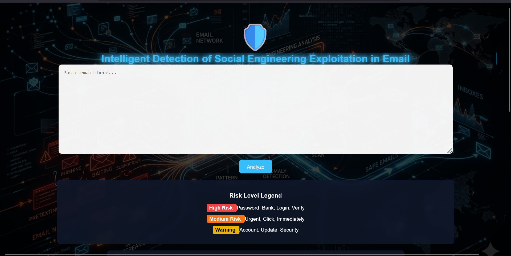

Tools Used
Python, email text analysis, data preprocessing, feature extraction, and model evaluation.
Academic and Security Work
This page highlights project evidence that supports my cybersecurity career direction.

This case study focuses on intelligent detection of social engineering exploitation in email. It connects directly to SOC work because phishing investigation is one of the common tasks handled by security teams.
The project strengthens my understanding of suspicious email indicators, feature extraction, model evaluation, threat detection, and investigation workflow.
Python, email text analysis, data preprocessing, feature extraction, and model evaluation.
Improved understanding of phishing, social engineering signals, detection logic, and prevention awareness.
Relevant to alert triage, suspicious email review, and early-stage threat investigation.
Conducted traffic analysis using Wireshark and configured network environments using Cisco Packet Tracer.
Studied SOC operations, incident response, threat detection methodologies, Linux administration, and monitoring tasks.
Developed an IoT-based monitoring system with sensor data visualization for hospital environments.